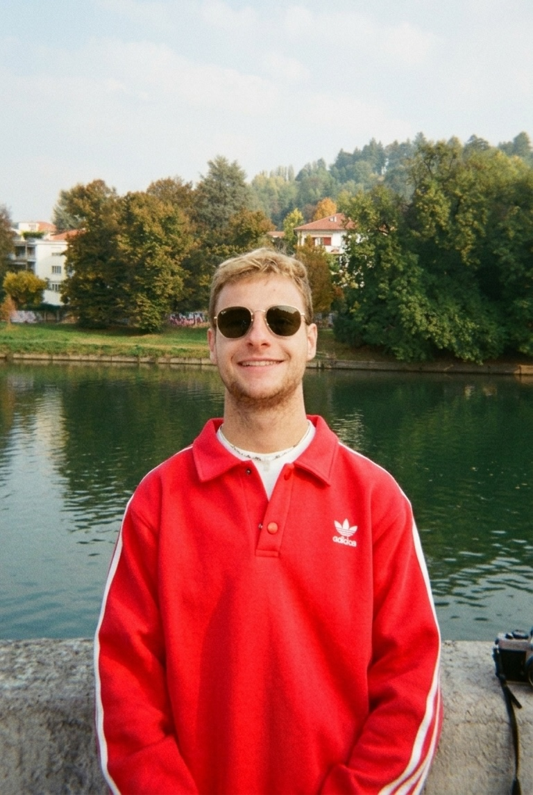

Talk to my AI Digital Twin
An interactive conversational persona synthesized from Antonio's CV and professional experience.

Antonio Cacciapuoti
Alpitour World
Designing, implementing and managing solid backend solutions from requirements elicitation to production deployment.
Studying and exploring AI Engineering.
An interactive conversational persona synthesized from Antonio's CV and professional experience.